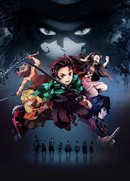

Demon Slayer: Kimetsu no Yaiba (鬼滅の刃, Kimetsu no Yaiba, lit. "Blade of Demon Destruction") is a Japanese manga series written and illustrated by Koyoharu Gotouge. It follows teenage Tanjiro Kamado, who strives to become a demon slayer after his family is slaughtered and his younger sister Nezuko is turned into a demon.